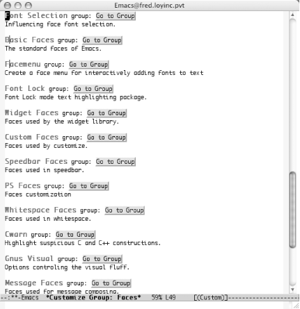
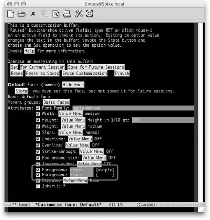
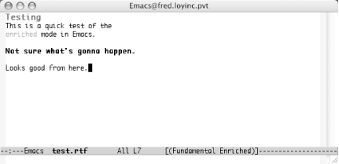

{% include JB/setup %}
{% raw %}
<div>
<div class="book" xml:lang="en"><div class="book"><div class="book"><div class="book"><h1 class="title"><a id="gnu3-CHP-10-SECT-3" class="calibre1"></a>Modifying Fonts and Colors</h1></div></div></div><p class="copyright">Emacs on certain platforms (Windows, Mac OS X, and Unix) can display
text in multiple fixed-width fonts. It doesn't yet
handle proportional-spacing fonts well, although future releases are
expected to address that issue. Emacs can display text in as many
combinations of foreground and background colors as your system
supports. We'll take a look at your options for
changing fonts. You can make quick, interactive changes in any
buffer. You can also customize the fonts and colors used by automatic
highlight features such as Isearch and font-lock mode.</p><p class="copyright">And just in case you want to use Emacs to edit rudimentary
styled-text documents, we'll also look at how to
save and load files that have font and color enriched text.</p><div class="book" xml:lang="en"><div class="book"><div class="book"><div class="book"><h2 class="title1"><a id="gnu3-CHP-10-SECT-3.1" class="calibre1"></a>Changing Fonts Interactively</h2></div></div></div><p class="copyright">Both Custom and the Edit menu in
<a id="gnu3-CHP-10-ITERM-2689" class="calibre2"></a>Emacs provide you with a way to
change the current font and color by picking a new one from the Text
Properties menu.</p><p class="copyright">To understand the Text Properties menu, <a id="gnu3-CHP-10-ITERM-2690" class="calibre2"></a>you'll find it useful
to know that Emacs thinks internally <a id="gnu3-CHP-10-ITERM-2691" class="calibre2"></a>
               <a id="gnu3-CHP-10-ITERM-2692" class="calibre2"></a>in
terms of <span><em class="calibre7">faces</em></span>. A face is a font and color
combination. The Text Properties menu presents you with a small set
of premixed faces and the option to specify others by name.</p><p class="copyright">We'll go into more detail about faces, how to name
them, and the related Lisp programming constructs later in this
chapter. For now, consider simply that every character in a buffer
may have a different face invisibly associated with it (though in
practice it would be quite surprising if face changes were that
frequent!).</p><p class="copyright">Holding down the <span><strong class="calibre5">Shift</strong></span> key while
clicking the left mouse button takes you to a menu of fonts.
Selecting one of these instantly changes the Emacs font for the
current frame and redisplays the frame. This is an easy way to
experiment with different fonts to see how well they trade screen
space for readability on your display.</p></div><div class="book" xml:lang="en"><div class="book"><div class="book"><div class="book"><h2 class="title1"><a id="gnu3-CHP-10-SECT-3.2" class="calibre1"></a>Automatic Highlighting and Coloring</h2></div></div></div><p class="copyright">A number of modules
<a id="gnu3-CHP-10-ITERM-2693" class="calibre2"></a>
               <a id="gnu3-CHP-10-ITERM-2694" class="calibre2"></a>in
Emacs feature text highlighting and syntax coloring. The various
programming and markup language modes (Lisp mode, Java mode, HTML
mode, and so on) have such highlighting. How you customize those
fonts and colors depends heavily on the individual module.</p><div class="book" xml:lang="en"><div class="book"><div class="book"><div class="book"><h3 class="title4"><a id="gnu3-CHP-10-SECT-3.2.1" class="calibre1"></a>Isearch</h3></div></div></div><p class="copyright">The Isearch facility in <a id="gnu3-CHP-10-ITERM-2695" class="calibre2"></a>
                  <a id="gnu3-CHP-10-ITERM-2696" class="calibre2"></a>Emacs has undergone a few changes as it
has matured. It uses font faces and coloring to highlight a document
when you search for words or expressions. You may find the default
choices a bit, well, stark. You can customize the group by typing
<span><strong class="calibre5">M-x customize-group</strong></span> Enter <span><strong class="calibre5">isearch-faces</strong></span> Enter to change them.</p><p class="copyright">Incidentally, you might just try changing the face it uses to
highlight the secondary matches, so that it's less
intrusive.</p></div><div class="book" xml:lang="en"><div class="book"><div class="book"><div class="book"><h3 class="title4"><a id="gnu3-CHP-10-SECT-3.2.2" class="calibre1"></a>Buffer highlighting</h3></div></div></div><p class="copyright">The easiest way to use
<a id="gnu3-CHP-10-ITERM-2697" class="calibre2"></a>
                  <a id="gnu3-CHP-10-ITERM-2698" class="calibre2"></a>fonts and colors is to load the
Lisp package <span><em class="calibre7">font-lock.el</em></span> (included with the
Emacs distribution). This mode tries to highlight interesting
features of your text buffers using color and different faces. As an
example, try picking out comments in C and Lisp buffers, and painting
them in a color that contrasts with the basic black of the code.</p><a id="I_10_tt544" class="calibre2"></a><pre class="programlisting">;; Turn on font lock mode every time Emacs initializes a buffer 
;; for Lisp or C.
;;
(add-hook 'emacs-lisp-mode-hook 'turn-on-font-lock)
(add-hook 'c-mode-hook 'turn-on-font-lock)</pre><p class="copyright">Font-lock mode tends to be especially helpful for colorizing
programming language code or outline mode text but also gives useful
results for HTML files and Dired buffers. In fact, we find it useful
in so you may want to turn it on globally instead, as we did in
"A Sample <span><em class="calibre7">.emacs</em></span>
file" earlier in this chapter. If you
want more examples using font-lock mode, refer back to <a class="calibre2" href="ch09.html" title="Chapter 9. Computer Language Support">Chapter 9</a> on some of the various programming language
modes supported by Emacs.</p></div></div><div class="book" xml:lang="en"><div class="book"><div class="book"><div class="book"><h2 class="title1"><a id="gnu3-CHP-10-SECT-3.3" class="calibre1"></a>Customizing Fonts Through Custom</h2></div></div></div><p class="copyright">Now that you know how to <a id="gnu3-CHP-10-ITERM-2699" class="calibre2"></a>
               <a id="gnu3-CHP-10-ITERM-2700" class="calibre2"></a>
               <a id="gnu3-CHP-10-ITERM-2701" class="calibre2"></a>work
with Custom, you can also go that route to edit and alter fonts and
colors. The easy way to get started in Custom is to run <span><strong class="calibre5">M-x customize-group</strong></span> and enter <span><strong class="calibre5">faces</strong></span> for the group name. (<a class="calibre2" href="ch10s03.html#gnu3-CHP-10-FIG-10" title="Figure 10-10. Font face groups available in Custom (Mac OS X)">Figure 10-10</a> shows a sample of the groups
you'll see.)</p><div class="figure"><a id="gnu3-CHP-10-FIG-10" class="calibre2"></a><div class="figure-contents"><div class="mediaobject"><a id="I_10_tt545" class="calibre2"></a></div></div><p class="title3"><b class="calibre25">Figure 10-10. Font face groups available in Custom (Mac OS X)</b></p></div><br class="book"/></div><div class="book" xml:lang="en"><div class="book"><div class="book"><div class="book"><h2 class="title1"><a id="gnu3-CHP-10-SECT-3.4" class="calibre1"></a>Changing Colors</h2></div></div></div><p class="copyright">But what if you just want to change
<a id="gnu3-CHP-10-ITERM-2702" class="calibre2"></a>the
default foreground and background colors? Well, that turns out to be
quite simple. You can use the <span><strong class="calibre5">M-x
set-foreground-color</strong></span> and <span><strong class="calibre5">M-x
set-background-color</strong></span> commands to pick simple colors (based
on their names such as black, white, yellow, blue, red, etc.). Be
careful, though, because Emacs has no qualms about letting you set
these values to garish—or even impossible—combinations!
While black text on a black background may provide some level of
security from anyone peeking over your shoulder,
it's not the most productive combination in the long
run.</p><p class="copyright">To see the range of colors available, run <span><strong class="calibre5">M-x
set-foreground-color</strong></span>. When it prompts you for a color,
just press Tab to get a completion list of the possible
colors—you should get quite a few! These names can also be
typed into the foreground and background fields (or any other
color-based field) in Custom.</p><p class="copyright">You can also use Custom to control all aspects (including the
foreground and background colors) of the
"default" font. <a class="calibre2" href="ch10s03.html#gnu3-CHP-10-FIG-11" title="Figure 10-11. Changes to the default font colors effectively set the foreground and background colors for Emacs (Mac OS X)">Figure 10-11</a> shows the Custom screen for just that font
after switching the colors to green and black.</p><div class="figure"><a id="gnu3-CHP-10-FIG-11" class="calibre2"></a><div class="figure-contents"><div class="mediaobject"><a id="I_10_tt546" class="calibre2"></a></div></div><p class="title3"><b class="calibre25">Figure 10-11. Changes to the default font colors effectively set the foreground and background colors for Emacs (Mac OS X)</b></p></div><br class="book"/><p class="copyright">You can go through the usual channels discussed previously to
customize this face, or come here directly with <span><strong class="calibre5">M-x customize-face</strong></span> and then enter <span><strong class="calibre5">default</strong></span> at the prompt.</p><div class="book" xml:lang="en"><div class="book"><div class="book"><div class="book"><h3 class="title4"><a id="gnu3-CHP-10-SECT-3.4.1" class="calibre1"></a>Changing the cursor color</h3></div></div></div><p class="copyright">Don't forget about the cursor! You can
<a id="gnu3-CHP-10-ITERM-2703" class="calibre2"></a>
                  <a id="gnu3-CHP-10-ITERM-2704" class="calibre2"></a>also
use <span><strong class="calibre5">set-cursor-color</strong></span> to change the
color of the cursor. That can be especially useful if you want a
black background—the default black cursor can easily get lost.</p></div></div><div class="book" xml:lang="en"><div class="book"><div class="book"><div class="book"><h2 class="title1"><a id="gnu3-CHP-10-SECT-3.5" class="calibre1"></a>Saving Font- and Color-Enriched Text</h2></div></div></div><p class="copyright">The astute reader will have noticed that,
<a id="gnu3-CHP-10-ITERM-2705" class="calibre2"></a>
               <a id="gnu3-CHP-10-ITERM-2706" class="calibre2"></a>
               <a id="gnu3-CHP-10-ITERM-2707" class="calibre2"></a>
               <a id="gnu3-CHP-10-ITERM-2708" class="calibre2"></a>although the highlighting machinery
allows us to set up enriched text in a buffer, we
haven't shown a way to save text properties along
with text between sessions. This is a significant issue. As long as
there is no way to save properties along with text, all the font and
color machinery remains little more than a display hack, good for
decorating buffers but adding little to Emacs's
editing power.</p><p class="copyright">What's needed to remedy this situation is a way for
text properties to be saved in an expanded text-markup form and
restored into text properties when the file is next edited.</p><p class="copyright">At the time of this writing, experimental code to support this is
included with Emacs. A library called
<span><em class="calibre7">enriched-mode</em></span> 
               <a id="gnu3-CHP-10-ITERM-2709" class="calibre2"></a>
               <a id="gnu3-CHP-10-ITERM-2710" class="calibre2"></a>supports saving text properties into the
MIME enriched-text format specified by the Internet standards
document RFC 1896, and can parse files in that format into Emacs
buffers with equivalent text and text properties.</p><p class="copyright">Although this mode is quite usable as is, much design and development
still needs to be done before the capabilities enriched mode supports
are mature and well integrated with other Emacs modes. By the time
you read this, there may be several such libraries, each supporting a
different enriched format such as HTML. Eventually modes like these
should enable Emacs to support WYSIWYG and even multimedia editing.</p><p class="copyright">To enter enriched mode, type <span><strong class="calibre5">M-x
enriched-mode</strong></span>. <code class="calibre21">Enriched</code> appears on the
mode line. Emacs may ask if you want to make newlines between
paragraphs hard. (This is because Emacs reformats the paragraphs when
you change margin settings.) Type <span><strong class="calibre5">y</strong></span>.</p><p class="copyright">You can use several font commands to decorate your text. Most begin
with the <span><strong class="calibre5">M-g</strong></span> prefix. <a class="calibre2" href="ch10s03.html#gnu3-CHP-10-TABLE-1" title="Table 10-1. Enriched mode font commands">Table 10-1</a>
lists some of the more common options. If you like using the menus,
you can also select
<a id="gnu3-CHP-10-ITERM-2711" class="calibre2"></a>
               <a id="gnu3-CHP-10-ITERM-2712" class="calibre2"></a>
               <a id="gnu3-CHP-10-ITERM-2713" class="calibre2"></a>the options in <a class="calibre2" href="ch10s03.html#gnu3-CHP-10-TABLE-1" title="Table 10-1. Enriched mode font commands">Table 10-1</a> using the Edit <span>→</span> Text Properties
<span>→</span> Face menu.</p><div class="book"><a id="gnu3-CHP-10-TABLE-1" class="calibre2"></a><p class="title2"><b class="calibre25">Table 10-1. Enriched mode font commands</b></p><div class="table-contents"><table summary="Enriched mode font commands" class="calibre8"><colgroup class="calibre9"><col class="calibre10"/><col class="calibre10"/></colgroup><thead class="calibre11"><tr class="calibre12"><th class="calibre26">
                           <p class="copyright">Command</p>
                        </th><th class="calibre27">
                           <p class="copyright">Font selected</p>
                        </th></tr></thead><tbody class="calibre15"><tr class="calibre12"><td class="calibre28">
                           <p class="copyright">
                              <span><strong class="calibre5">M-g d</strong></span>
                           </p>
                        </td><td class="calibre29">
                           <p class="copyright">default</p>
                        </td></tr><tr class="calibre12"><td class="calibre28">
                           <p class="copyright">
                              <span><strong class="calibre5">M-g b</strong></span>
                           </p>
                        </td><td class="calibre29">
                           <p class="copyright">bold</p>
                        </td></tr><tr class="calibre12"><td class="calibre28">
                           <p class="copyright">
                              <span><strong class="calibre5">M-g i</strong></span>
                           </p>
                        </td><td class="calibre29">
                           <p class="copyright">italic</p>
                        </td></tr><tr class="calibre12"><td class="calibre28">
                           <p class="copyright">
                              <span><strong class="calibre5">M-g l</strong></span>
                           </p>
                        </td><td class="calibre29">
                           <p class="copyright">bold-italic</p>
                        </td></tr><tr class="calibre12"><td class="calibre28">
                           <p class="copyright">
                              <span><strong class="calibre5">M-g u</strong></span>
                           </p>
                        </td><td class="calibre29">
                           <p class="copyright">underline</p>
                        </td></tr><tr class="calibre12"><td class="calibre30">
                           <p class="copyright">
                              <span><strong class="calibre5">M-g o</strong></span>
                           </p>
                        </td><td class="calibre31">
                           <p class="copyright">other (allows you to pick a font face by name)</p>
                        </td></tr></tbody></table></div></div><br class="book"/><p class="copyright">The commands listed in <a class="calibre2" href="ch10s03.html#gnu3-CHP-10-TABLE-1" title="Table 10-1. Enriched mode font commands">Table 10-1</a> apply to the
currently marked text. We used a number of these commands to produce
the simple text example shown in <a class="calibre2" href="ch10s03.html#gnu3-CHP-10-FIG-12" title="Figure 10-12. An enriched text example (Mac OS X)">Figure 10-12</a>.</p><div class="figure"><a id="gnu3-CHP-10-FIG-12" class="calibre2"></a><div class="figure-contents"><div class="mediaobject"><a id="I_10_tt547" class="calibre2"></a></div></div><p class="title3"><b class="calibre25">Figure 10-12. An enriched text example (Mac OS X)</b></p></div><br class="book"/><div class="book" xml:lang="en"><div class="book"><div class="book"><div class="book"><h3 class="title4"><a id="gnu3-CHP-10-SECT-3.5.1" class="calibre1"></a>Saving enriched text</h3></div></div></div><p class="copyright">When you save enriched text, Emacs <a id="gnu3-CHP-10-ITERM-2714" class="calibre2"></a>
                  <a id="gnu3-CHP-10-ITERM-2715" class="calibre2"></a>marks up the document with XML-like
tags. Emacs will happily read the document back in, although not many
other applications will know what to do with the tags. Still, as you
can see below, the tags are straightforward and would allow custom
applications such as CGI scripts for the Web to parse them quickly.</p><a id="I_10_tt548" class="calibre2"></a><pre class="programlisting">Content-Type: text/enriched
Text-Width: 70

&lt;x-color&gt;&lt;param&gt;blue&lt;/param&gt;Testing&lt;/x-color&gt;

This is a quick test of the

&lt;x-color&gt;&lt;param&gt;red&lt;/param&gt;enriched&lt;/x-color&gt; mode in Emacs.


&lt;bold&gt;Not sure what's gonna happen.&lt;/bold&gt;


Looks good from here.</pre><p class="copyright">But, you can't rely too much on enriched mode yet.
For example note the <code class="calibre21">Testing</code> title line. It
doesn't appear to contain any information about the
size of the font—which is definitely larger if you look at
Figure 10-11. Sure enough, killing the buffer and reloading the file
loses the size value. The text is still blue and the content is
available, but some of the formatting has been lost.</p><p class="copyright">The moral is a classic one: be careful. If you have serious enriched
text needs, Emacs is probably not the tool to use (at least not yet).
Many of the various word processors out there will do a much better
job. But if you just need some basic enhancements to documents that
only you or other Emacs users will view, enriched mode is just the
ticket.</p></div></div></div></div>

{% endraw %}

